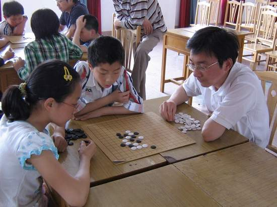
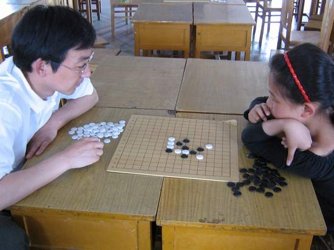
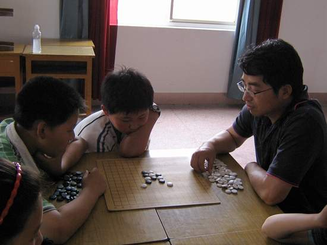
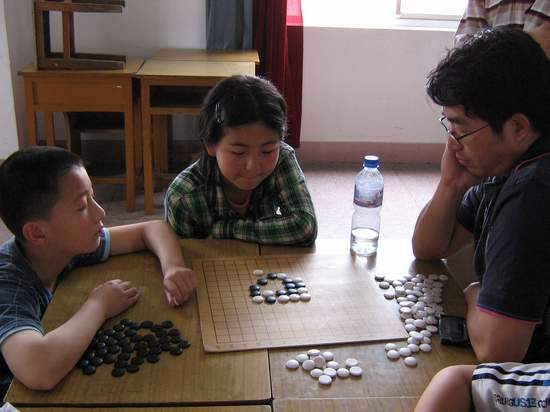
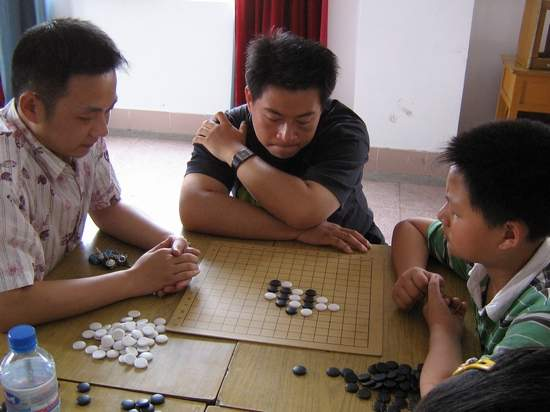
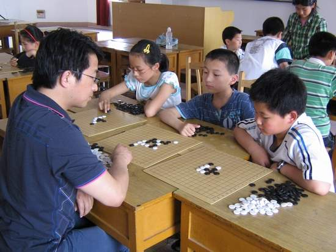
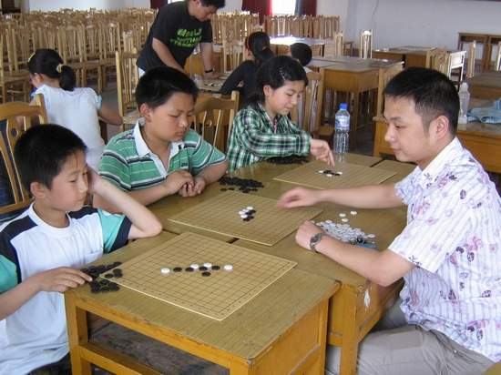
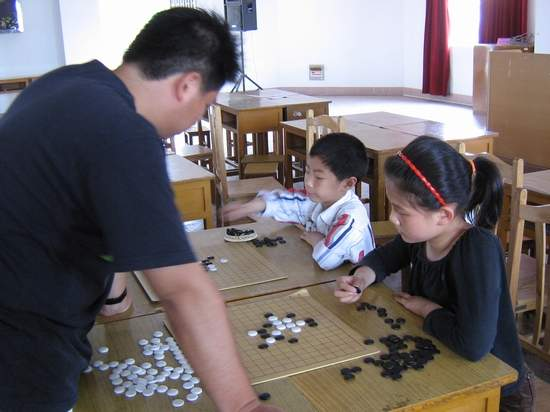
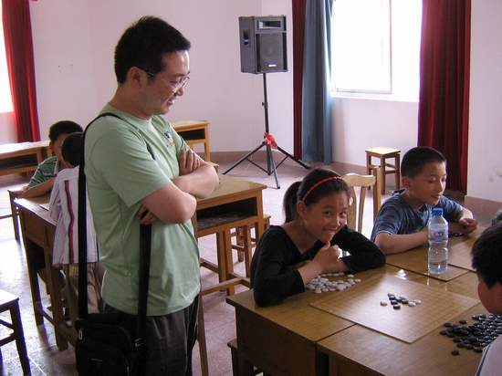

学生五子棋第二次活动
#1 学生五子棋第二次活动作者：黄药师 发表时间：2007-5-26 18:17:58
5月26日下午在一工小进行了学生五子棋第二次活动。
由于各方面原因，到场的学生只有唐闸小学的7名学生，以及一工小的一名学生。另外，痞子蔡，小包，锈刀，以及一徐姓高手到场与学生切磋！
锈刀 VS 许姝怡（唐闸小学五年级学生）

锈刀 VS 纪香（唐闸小学四年级学生）

痞子蔡 VS 陈振铭 （唐闸小学六年级学生）

痞子蔡 VS 方佳璋 （唐闸小学六年级学生）

小包 VS 陈振铭 （唐闸小学六年级学生）

大概是不过瘾，大人们开始玩起了车轮站！
痞子蔡 VS 许姝怡+方佳璋+顾佳炜

小包 VS 刘蔚然（唐闸小学六年级学生）+陈振铭+一工小的学生


今天活动的大部分时间都是在紧张的思考、计算中，但也不乏学生与大人之间精彩幽默的交流，看看下面这张照片，孩子做起了鬼脸！
#2 Re:学生五子棋第二次活动作者：有志青年 发表时间：2007-5-26 20:41:55
实在抱歉未能前来。
小树发热中，前一段时间长期挂水，这次不敢贸然前去挂水，在家观察中；老妈今日农忙下田劳作镰刀割坏了手，缝了两针，挂水三天。
上周忙，本以为下周要稍微闲一点的，不想……，唉，命苦呀。
#3 Re:学生五子棋第二次活动作者：黄药师 发表时间：2007-5-26 20:48:58
汗～～
五子棋比赛快到了！要准备准备吧！
一工小的棋太少了，我们学校的棋子是劣质货！
还有其他的东西要准备好才行吧？
还没有正式通知2号比赛呢！
#4 Re:学生五子棋第二次活动作者：有志青年 发表时间：2007-5-26 21:32:10
棋盘我这里有不少，棋子下周去买。
下周一将通知各学校抽签。
首先是分成两组进行单循环，每组排出前两名，然后四个队伍打交叉赛，角逐1234。
学生的个人赛预计也是如此。
每两个选手之间三局两胜，每局总时间10分钟，超过10分钟将开始每步10秒，如果对局双方落子总和达到100个子没有分出胜负，判白方胜。
#5 Re:Re:学生五子棋第二次活动作者：黄药师 发表时间：2007-5-26 23:01:11
引用：
原文由 有志青年 发表于 2007-5-26 21:32:10 :每两个选手之间三局两胜，每局总时间10分钟，超过10分钟将开始每步10秒，如果对局双方落子总和达到100个子没有分出胜负，判白方胜。
 我们吃亏了，我们两个女生是防守型+长考型！
我们吃亏了，我们两个女生是防守型+长考型！
555555555555555555555555555555555555555555555555
#6 Re:学生五子棋第二次活动作者：黄药师 发表时间：2007-5-27 0:08:04
每局总时间10分钟，超过10分钟将开始每步10秒，难道有计时器？#7 Re:学生五子棋第二次活动作者：黄药师 发表时间：2007-5-27 0:10:31
万一有恶意拖延时间怎么办啊？
难把握！
#8 Re:学生五子棋第二次活动作者：黄药师 发表时间：2009-5-21 19:48:14
好怀旧的照片啊！拉出来晒晒～